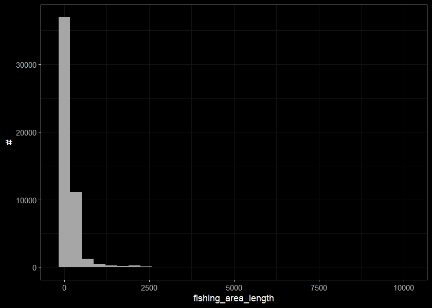
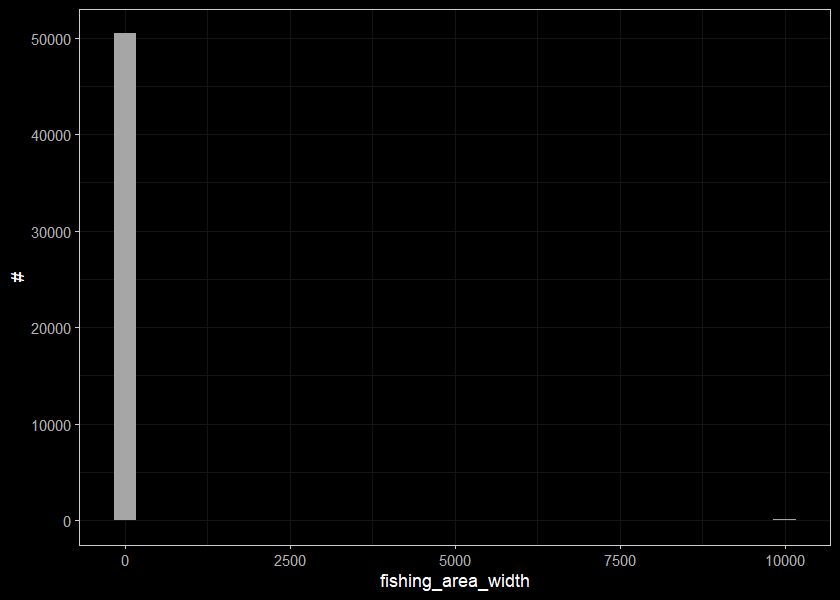
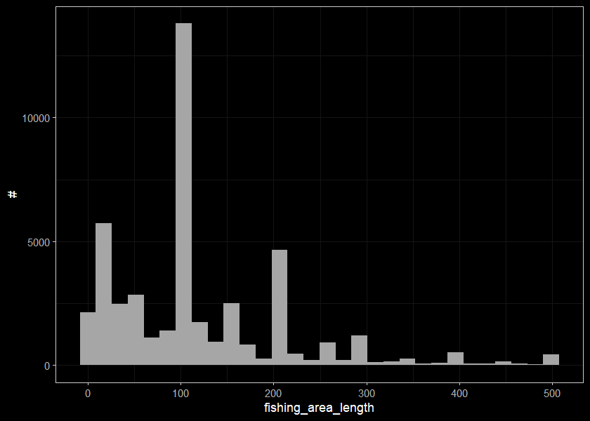
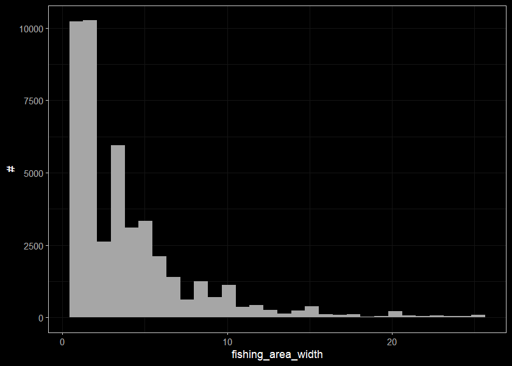
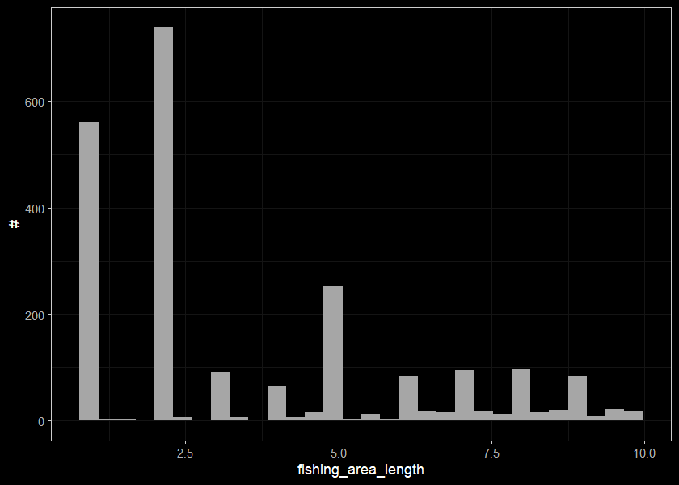
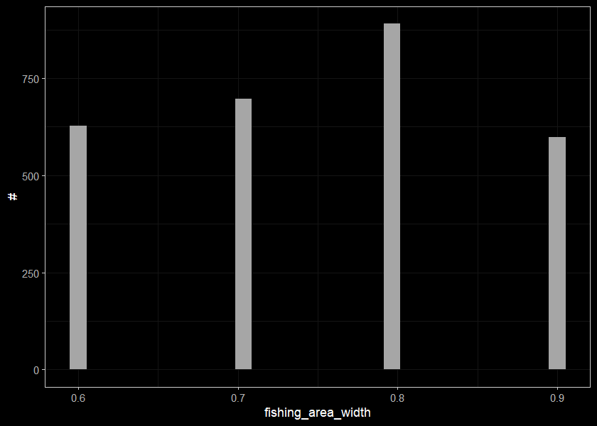

3 Explore Data Exported from FISS
Purpose of this section is to explore the species density data provided in csv format from the province. We would like to be able to tie density of fish species to habitat characteristics including gradient, channel size, discharge, elevation, forest cover, etc.
Load the data from the dropbox
Make a table that has all the info we want in one place for the summarized fish
##define species to analyze
spp_to_analyze <- c('RB', 'BT', 'GR', 'CH', 'CO', 'SK', 'WCT', 'ST', 'NFC', 'CH', 'KO', 'PK')
d_sum_raw <- left_join(
d %>% pluck('counts'),
d %>% pluck('visits'),
by = 'key'
) %>%
left_join(
.,
d %>% pluck('habitat'),
by = 'key'
) %>%
##clean it up and grab a density
filter(!is.na(fishing_area_length) &
fishing_area_length > 0 &
!is.na(fishing_area_width) &
fishing_area_width > 0 &
!is.na(utm_easting) &
!is.na(utm_northing) &
utm_zone > 0 &
#For the sake of a first run lets keep only the first passes from sites that have multiple passes
haul_or_pass == 1 &
species_code %in% spp_to_analyze) %>%
mutate(density_100m = number_caught/(fishing_area_length * fishing_area_width) * 100)Lets review how many occurrences are from the same site - not sure it matters though.
d_same_site <- d_sum_raw %>%
group_by(across(data_set:agncy_id)) %>%
summarise(n = n()) %>%
filter(n > 1)Lets have a look at what we have by species.
d_raw_by_sp <- d_sum_raw %>%
group_by(species_code) %>%
mutate(area = fishing_area_length * fishing_area_width) %>%
summarise(n = n(),
dens_min = min(density_100m, na.rm = T),
dens_max = max(density_100m, na.rm = T),
dens_med = median(density_100m, na.rm = T),
area_min = min(area, na.rm = T),
area_max = max(area, na.rm = T),
area_med = median(area, na.rm = T),
len_min = min(fishing_area_length, na.rm = T),
len_max = max(fishing_area_length, na.rm = T),
len_med = median(fishing_area_length, na.rm = T),
wid_min = min(fishing_area_width, na.rm = T),
wid_max = max(fishing_area_width, na.rm = T),
wid_med = median(fishing_area_width, na.rm = T))
d_raw_by_sp## # A tibble: 11 x 14
## species_code n dens_min dens_max dens_med area_min area_max area_med len_min len_max len_med wid_min wid_max wid_med
## <chr> <int> <dbl> <dbl> <dbl> <dbl> <dbl> <dbl> <dbl> <dbl> <dbl> <dbl> <dbl> <dbl>
## 1 BT 4398 0.00000500 200 0.571 1 99980001 390 1 9999 100 0.5 10000. 5
## 2 CH 1303 0.000182 848. 2.5 1 549994. 240 1 1600 80 0.7 10000. 3
## 3 CO 3393 0.00855 6292. 6 0.72 549994. 112 1 1950 30 0.3 10000. 3
## 4 GR 770 0.00110 125 0.333 20 91200 600 5 3000 150 0.5 708 4
## 5 KO 373 0.00167 3700 0.488 1 60000 300 1 4500 100 1 100 3
## 6 NFC 23136 0 0 0 0.1 99998000. 200 0.5 10000. 110 0.1 10000. 1.5
## 7 PK 12 0.0833 25 0.528 24 1200 358. 12 180 52 2 15 7.5
## 8 RB 14500 0 14700 1.33 1 99998000. 250 1 10000. 100 0.1 10000. 4
## 9 SK 80 0.0182 103. 0.558 31 5500 240 16 1600 80 1 20 3
## 10 ST 415 0.0286 382. 7.34 31.3 7500 104. 6 1000 17.5 1.3 61.8 6
## 11 WCT 2240 0 310 1.2 2 7969920. 250 2 3443 100 0.5 10000. 4ggplot(select(d_sum_raw, fishing_area_length), aes(x=fishing_area_length)) +
geom_histogram(position="identity", size = 0.75)+
labs(x = "fishing_area_length", y = "#") +
ggdark::dark_theme_bw(base_size = 11)
ggplot(select(d_sum_raw, fishing_area_width), aes(x=fishing_area_width)) +
geom_histogram(position="identity", size = 0.75)+
labs(x = "fishing_area_width", y = "#") +
ggdark::dark_theme_bw(base_size = 11)
Lets trim out our strange numbers for the site sizes
d_sum <- left_join(
d %>% pluck('counts'),
d %>% pluck('visits'),
by = 'key'
) %>%
left_join(
.,
d %>% pluck('habitat'),
by = 'key'
) %>%
##clean it up and grab a density
filter(!is.na(fishing_area_length) &
fishing_area_length > 0.9 &
fishing_area_length < 500.1 &
!is.na(fishing_area_width) &
fishing_area_width > 0.5 &
fishing_area_width < 25.1 &
!is.na(utm_easting) &
!is.na(utm_northing) &
utm_zone > 0 &
#For the sake of a first run lets keep only the first passes from sites that have multiple passes
haul_or_pass == 1 &
species_code %in% spp_to_analyze) %>%
mutate(density_100m = number_caught/(fishing_area_length * fishing_area_width) * 100) %>%
tibble::rowid_to_column(var = 'fiss_density_id')
##have another look at it
d_by_sp <- d_sum %>%
group_by(species_code) %>%
mutate(area = fishing_area_length * fishing_area_width) %>%
summarise(n = n(),
dens_min = min(density_100m, na.rm = T),
dens_max = max(density_100m, na.rm = T),
dens_med = median(density_100m, na.rm = T),
area_min = min(area, na.rm = T),
area_max = max(area, na.rm = T),
area_med = median(area, na.rm = T),
len_min = min(fishing_area_length, na.rm = T),
len_max = max(fishing_area_length, na.rm = T),
len_med = median(fishing_area_length, na.rm = T),
wid_min = min(fishing_area_width, na.rm = T),
wid_max = max(fishing_area_width, na.rm = T),
wid_med = median(fishing_area_width, na.rm = T))
d_by_sp ## # A tibble: 11 x 14
## species_code n dens_min dens_max dens_med area_min area_max area_med len_min len_max len_med wid_min wid_max wid_med
## <chr> <int> <dbl> <dbl> <dbl> <dbl> <dbl> <dbl> <dbl> <dbl> <dbl> <dbl> <dbl> <dbl>
## 1 BT 3956 0.01 200 0.667 1 10000 300 1 500 100 0.6 25 4.7
## 2 CH 1282 0.0268 848. 2.60 1 8000 240 1 500 80 0.7 25 3
## 3 CO 3298 0.0291 6292. 6.25 0.72 7500 108. 1 500 30 0.6 25 3
## 4 GR 658 0.00833 125 0.447 20 12000 498. 5 500 150 0.7 25 3.3
## 5 KO 262 0.0204 3700 1.33 1 4900 300 1 500 100 1 21 3
## 6 NFC 20100 0 0 0 1 12500 200 1 500 107 0.6 25 1.6
## 7 PK 12 0.0833 25 0.528 24 1200 358. 12 180 52 2 15 7.5
## 8 RB 13299 0 14700 1.58 1 12000 220 1 500 100 0.6 25 3.9
## 9 SK 79 0.0182 103. 0.556 31 5500 240 16 400 80 1 20 3
## 10 ST 397 0.112 382. 8.4 31.3 5000 102 6 410 17.1 1.3 20.4 6
## 11 WCT 2137 0 310 1.26 2 6460 230 2 500 100 0.6 25 4ggplot(select(d_sum, fishing_area_length), aes(x=fishing_area_length)) +
geom_histogram(position="identity", size = 0.75)+
labs(x = "fishing_area_length", y = "#") +
ggdark::dark_theme_bw(base_size = 11)
ggplot(select(d_sum, fishing_area_width), aes(x=fishing_area_width)) +
geom_histogram(position="identity", size = 0.75)+
labs(x = "fishing_area_width", y = "#") +
ggdark::dark_theme_bw(base_size = 11)
What do the small sites look like? Should we keep them?
length_cut <- 10
width_cut <- 1
sites_small <- d_sum %>%
filter(fishing_area_length < length_cut |
fishing_area_width < width_cut) %>%
mutate(wettedwidth_ave = rowMeans(select(., starts_with("wetted")), na.rm = TRUE)) %>%
select(fishing_area_length, fishing_area_width, wettedwidth_ave)
sites_small## # A tibble: 5,079 x 3
## fishing_area_length fishing_area_width wettedwidth_ave
## <dbl> <dbl> <dbl>
## 1 8 4 NaN
## 2 8 4 NaN
## 3 5 2 NaN
## 4 5 5 NaN
## 5 100 0.8 NaN
## 6 200 0.9 NaN
## 7 200 0.7 NaN
## 8 200 0.8 NaN
## 9 200 0.7 NaN
## 10 200 0.9 NaN
## # ... with 5,069 more rowsThese are small sites that have associated wetted widths
sites_small %>%
filter(!is.na(wettedwidth_ave))## # A tibble: 2,125 x 3
## fishing_area_length fishing_area_width wettedwidth_ave
## <dbl> <dbl> <dbl>
## 1 80 0.7 0.717
## 2 67 0.7 0.643
## 3 100 0.7 0.867
## 4 100 0.8 0.843
## 5 100 0.8 0.795
## 6 100 0.6 0.8
## 7 100 0.9 0.947
## 8 200 0.8 0.783
## 9 100 0.6 0.617
## 10 100 0.9 0.867
## # ... with 2,115 more rowssites_small_len <- sites_small %>%
filter(fishing_area_length < length_cut)
sites_small_len## # A tibble: 2,278 x 3
## fishing_area_length fishing_area_width wettedwidth_ave
## <dbl> <dbl> <dbl>
## 1 8 4 NaN
## 2 8 4 NaN
## 3 5 2 NaN
## 4 5 5 NaN
## 5 1 1 NaN
## 6 3 1 NaN
## 7 4 7 NaN
## 8 7 3 NaN
## 9 7 3 NaN
## 10 9 8 NaN
## # ... with 2,268 more rowsDistribution of sites with small lengths
ggplot(select(sites_small_len, fishing_area_length), aes(x=fishing_area_length)) +
geom_histogram(position="identity", size = 0.75)+
labs(x = "fishing_area_length", y = "#") +
ggdark::dark_theme_bw(base_size = 11)
Sites with small widths
sites_small_wid <- sites_small %>%
filter(fishing_area_width < width_cut)
sites_small_wid## # A tibble: 2,815 x 3
## fishing_area_length fishing_area_width wettedwidth_ave
## <dbl> <dbl> <dbl>
## 1 100 0.8 NaN
## 2 200 0.9 NaN
## 3 200 0.7 NaN
## 4 200 0.8 NaN
## 5 200 0.7 NaN
## 6 200 0.9 NaN
## 7 200 0.8 NaN
## 8 250 0.6 NaN
## 9 80 0.7 0.717
## 10 67 0.7 0.643
## # ... with 2,805 more rowsDistribution of sites with small widths. Are these sites where it was a presence/absence test so maybe not suitable for density modelling? Don’t know…
ggplot(select(sites_small_wid, fishing_area_width), aes(x=fishing_area_width)) +
geom_histogram(position="identity", size = 0.75)+
labs(x = "fishing_area_width", y = "#") +
ggdark::dark_theme_bw(base_size = 11)